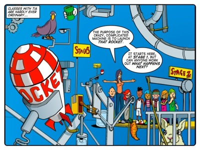
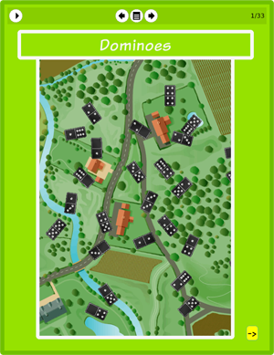

Story: The Mushroom Effect
Theme:
Synopsis
Tia shows The Thunderbolt kids a Rube Goldberg machine –an overcomplicated device that does something simple. In this case it launches a rocket. Tia shows the kids this device to teach them about cause and effect and the principle of thinking past stage one. That is, thinking about the medium- and long-term consequences of an action or a phenomenon, and not just the immediate consequences. (You'll notice that the machine is actually divided into different stages that are labeled from stages 1 to 3.)
One of the machine’s many steps involves a rabbit. After the lesson our four protagonists are asked to return it to its hutch. When they return the rabbit Tom finds a glowing green mushroom in the store room. The kids read the instructions and learn that rabbits love to eat these mushrooms and that it causes their fur to change colour. In a flawed attempt to think past stage one, they take some spores and run off to plant them. Unfortunately they don’t finish reading the growing instructions and so they miss the warning to not water the mushrooms.
Planting the spores is easy and the kids run inside to miss the rain. They don’t know that water causes the mushrooms to grow uncontrollably because they didn’t finish reading the instructions. This means they wake up to quite a shock later that night: the mushrooms are huge and have taken over the entire vegetable garden. Tia is furious and tells them to fix the problem by dawn. The kids read the rest of the instructions and learn that they can use rabbits to eat them right out of the ground. Unfortunately the exhausted Thunderbolt kids have forgotten how much damage bunnies can do and forget to put them back in their hutches. Now the sleep-deprived kids have to go track down the rabbit.
The Mushroom Effect presents a cautionary tale about the failure to think ahead. It deals with practical mistakes that emphasise the need to imagine "what will happen next" and to use that thinking to avoid trouble. So while the Thunderbolt kids should have done things differently, it is their failure to think ahead that is important. That is, to use all the available information to think beyond stage one.
Activity: A domino rally
This activity challenges learners to use objects in the classroom to set up a domino rally. The ideas of a situation "mushrooming" out of control or having a run-on effect, as dominoes do, are both metaphors for the principle of thinking beyond stage one. So this activity extends the metaphorical look at cause and effect that we explore in the story.
The purpose is to allow learners to physically work with objects in a way that demands that they think beyond stage one to achieve the best possible outcome. That is, to build the longest and most effective domino rally that it is possible for them to build, given what they have available.
In doing this activity we want learners to question the relationship between objects and their properties. And we want them to recognise that different objects have properties that make them behave differently from each other. Recognising these properties and their implications can help them to make effective predictions about their behaviour, which will help them learn to manipulate objects effectively.

The eToys project: Dominoes
In this project Tom shows learners how to build a chain of cause-and-effect in eToys. In this instance, learners create a domino rally where one domino knocks down another. This is an important step for learners. They are learning how objects can be given properties and how these properties govern the interaction of objects. Learners need to be comfortable with programming simple interactions before they are ready to understand how properties can be passed from one object to another.